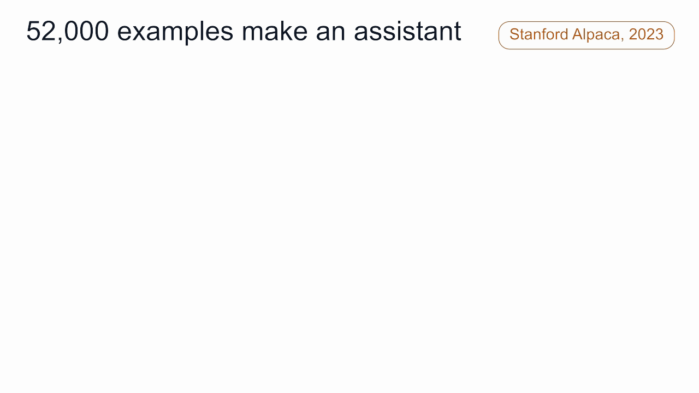
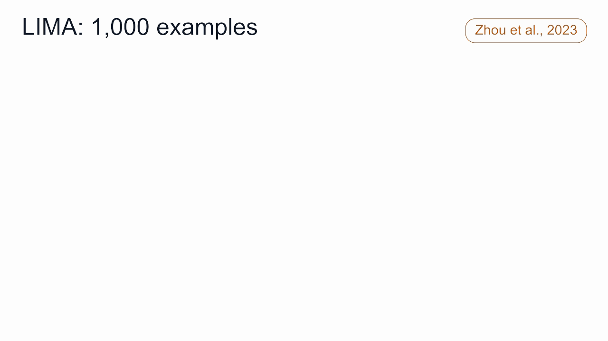
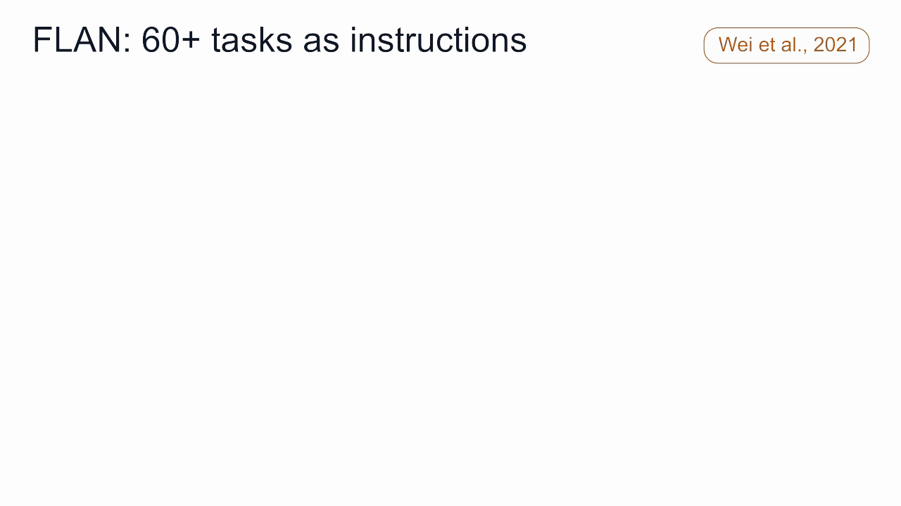
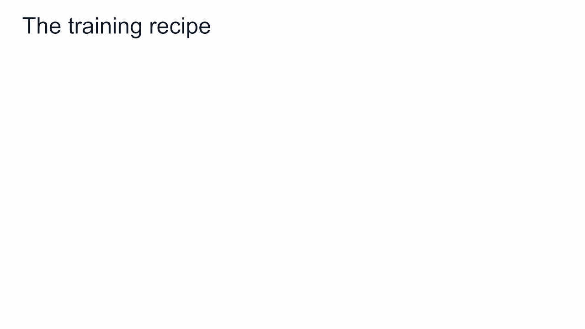
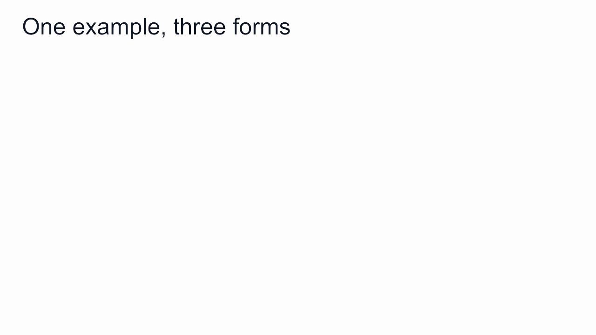
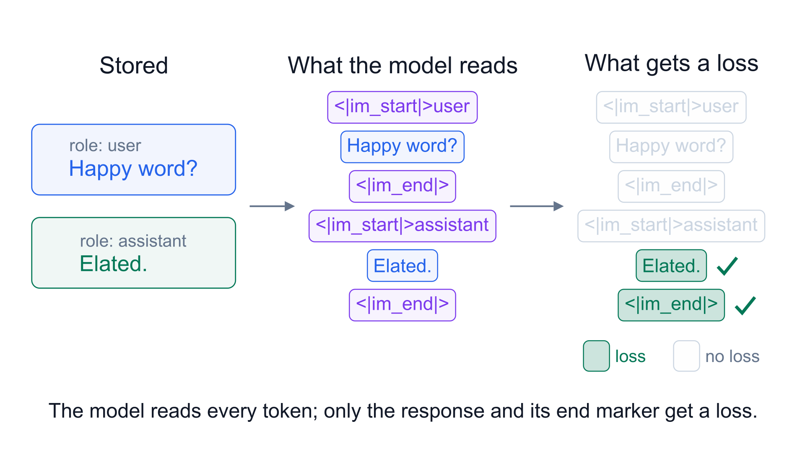
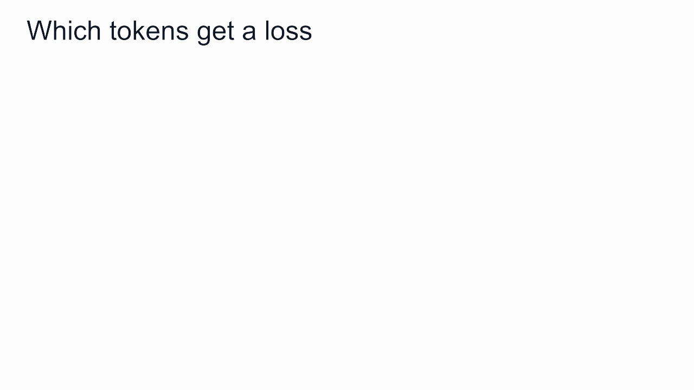
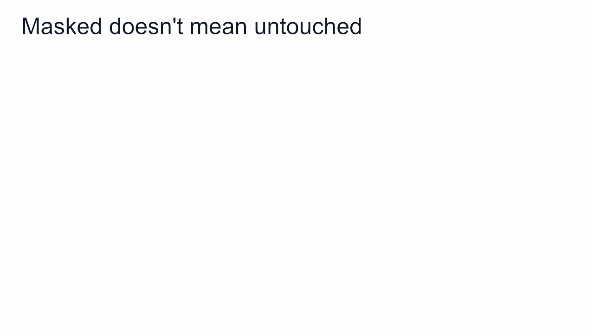
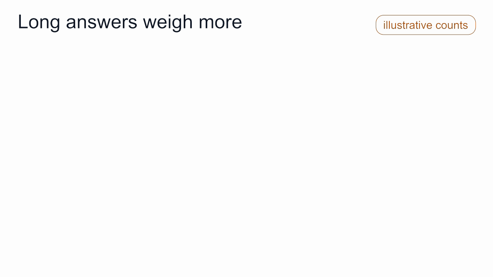

52,000 条示例，几百美元
2023 年 3 月，斯坦福的一个团队用 Meta 的 LLaMA 7B 训练出了能按指令回答问题的模型 Alpaca。LLaMA 7B 原本只做过预训练，只会预测下一个词。
团队没有改动模型结构，也没有补充新的知识，只用了 52,000 条示例，每条由一个指令和一个回答组成。
这些示例由 OpenAI 的 text-davinci-003 自动生成，花费不到 500 美元。训练在 8 块 GPU 上用了 3 个小时，花费不到 100 美元。团队做了一次小规模盲测，Alpaca 和 text-davinci-003 的回答被选中的次数几乎相同：90 比 89。

Alpaca 也会给出错误答案。问它坦桑尼亚的首都，它回答达累斯萨拉姆，正确答案是多多马。
示例教会了模型如何回答，但没有教会它哪些事实是正确的。
为什么少量示例就能明显改变模型的行为，却无法修正它的事实错误？本文从这个问题出发，介绍后训练的第一种技术：instruction tuning（指令微调），也叫 supervised fine-tuning（SFT，监督微调）。这是后训练系列的第二篇。
同一个损失，不同任务
指令微调沿用预训练的训练目标：在每个位置预测下一个 token，用 cross-entropy loss（交叉熵损失） 衡量预测和正确 token 之间的差距，通过训练提高正确 token 的概率。
区别在于数据和任务。预训练使用原始文本，任务是续写；指令微调使用成对的数据，每对包含一个指令和一个回答，任务是根据指令生成回答。
损失函数相同，数据和任务不同：预训练学习续写文本，指令微调学习回答指令。
它被称为监督微调，是因为每个输入都有一个指定的目标输出，这和数据由谁编写无关。预训练文本同样由人编写；Alpaca 的示例全部由模型生成，仍然属于监督数据。
指令微调学到了什么
基座模型在预训练中已经学到了大量知识，包括事实、语法、代码和各种文体，但它的默认行为是续写输入的文本。收到一个问题，它可能接着写出更多问题。
指令微调改变的是模型的行为方式：
- 针对请求给出回答，不再续写输入。
- 按指令要求的格式输出，例如列表、单个词或译文。
- 在多轮对话中区分用户和助手的发言。
- 回答完成后停止生成。
- 在示例包含拒绝的情况下，拒绝某些请求。
LIMA 和 FLAN 两项研究说明了这种变化的特点。
LIMA（2023） 只用 1,000 条精选示例微调 65B 的 LLaMA，没有使用强化学习。在人工评测中，43% 的回答与 GPT-4 相当或更好。作者据此认为，模型的知识几乎全部来自预训练，少量指令数据主要决定回答的方式。

FLAN（2021） 把 60 多个 NLP 任务改写成自然语言指令，用来微调一个 137B 的模型。在训练中没有出现过的任务上，它在 25 项测试中有 20 项超过了零样本的 175B GPT-3。

这说明指令微调学到的是遵循指令的通用能力，可以泛化到训练中没有出现过的任务。因此，指令微调是后训练的第一步：先让模型能够按指令作答，再由偏好对齐和强化学习提高回答质量。
训练流程
指令微调分五步：
- 收集：准备由指令和回答组成的数据对。
- 格式化：用模型的 chat template（对话模板） 把每对数据转换成对话格式的 token 序列。
- 掩码：用 loss mask（损失掩码） 标出需要计算损失的 token，只计算回答部分。
- 训练：使用下一个 token 预测损失，学习率较小，通常只训练几个 epoch。可以更新全部参数，即 full fine-tuning（全参数微调）；也可以冻结原有参数、只训练少量新增参数，即 LoRA，这是下一篇的主题。
- 评测：在训练中没有出现过的任务上评估效果。

第 2、3 步涉及较多细节，下面分别说明。
一条示例的三种形态
存储形态：一段对话，由若干条消息组成，每条消息标明角色（system、user、assistant）。
输入形态：对话模板把所有消息拼接成一个 token 序列，并插入特殊标记。在 Qwen 的模板中，每轮发言以 <|im_start|> 和角色名开头，以 <|im_end|> 结尾。
训练形态：损失掩码标出序列中参与计算损失的 token。模型读取整个序列，但只有被标出的 token 计入损失。

下图把三种形态放在一起对照：

哪些 token 计算损失
判断标准只有一条：
只对模型在实际使用时需要生成的 token 计算损失。
据此逐项判断：
- 用户消息：不计算。 模型需要读取，但不需要生成。如果对它计算损失，模型会学习生成用户的提问。
- 助手开头标记
<|im_start|>assistant：不计算。 实际使用时，这个标记由应用程序写入提示。 - 回答：计算。
- 结尾标记
<|im_end|>：计算。 模型通过它学习何时停止生成。缺少这一项，模型可能在回答后继续生成，甚至生成下一轮用户消息。 <|im_end|>之后的换行：不计算。 此时生成已经结束。

写成公式，mₜ = 1 表示位置 t 计算损失，否则为 0：
loss = − (1 / 计算损失的 token 数) × Σₜ mₜ · log p(位置 t 的正确下一个 token)
不计算损失的位置贡献为零，平均值只在计算损失的位置上求得。
被掩码的 token 仍会被训练
损失掩码只决定哪些位置的预测计入损失，不影响 attention（注意力） 读取哪些 token。回答依赖于对提示的读取，因此回答的损失产生的梯度会通过注意力传回提示中的 token，并更新处理这些 token 的参数。

也就是说，被掩码的 token 不计算损失，但仍然参与训练。
错开一个位置
模型在位置 t 的输出是对位置 t + 1 的预测，因此计算损失时，预测要和后一个位置的 token 对齐。在 PyTorch 中写成：
cross_entropy(logits[:-1], labels[1:], ignore_index=-100)
其中 -100 表示不计算损失的位置。
如果没有错开这一位，形状仍然匹配，代码可以运行，但每个预测都和当前位置的 token 对齐，模型学习的是复制当前 token。
训练前，建议把计算损失的 token 解码出来检查一遍：结果应当只包含各个回答及其 <|im_end|>。
数据从哪里来
指令数据主要有三个来源：
- 人工编写：由志愿者或标注员编写指令和回答，质量高，成本也高。
- 改写现有数据集：用简单模板把翻译、问答、情感分析等数据集转换成指令，例如：这位评论者喜欢这部电影吗？
- 模型生成：由语言模型生成指令和回答，通常再经过筛选或审核。这是目前最常用的来源。
数据质量的影响很大。有研究在大型指令数据集中加入 500 条安全示例，模型产生有害回答的比例就明显下降。
组合数据时还要注意长度。损失按计算损失的 token 求平均，回答越长，在损失中的占比越大：一条 500 个 token 的回答，权重约为一条 2 个 token 回答的 250 倍。因此，组合指令数据时应按 token 数量平衡，只看示例条数是不够的。

指令微调的能力与局限
能做到的：以较低成本让模型学会按指令作答、遵循格式、区分对话角色、适时停止和拒绝某些请求，并能泛化到新任务。
做不到的：
- 可靠地补充知识。 Alpaca 答错首都的例子说明，模型学到的是回答的形式，掌握的知识并没有增加。它还可能学会在没有把握的问题上同样给出肯定的回答。
- 超越训练数据。 模型模仿示例，也会模仿示例中的错误。
- 比较回答的优劣，或判断回答是否正确。 每条示例只提供一个参考回答，模型无法从中得知两个都合理的回答哪个更好，也无法得知一段很长的解题过程最终是否正确。
最后一点由后续两种技术解决：preference alignment（偏好对齐） 从回答之间的比较中学习；RLVR（Reinforcement Learning with Verifiable Rewards，可验证奖励强化学习） 根据答案是否正确来学习。
推理模型的训练也遵循这个顺序：先用写好的解题过程做指令微调，让模型学会逐步推理的格式，再用强化学习提高推理的正确率。
小结
- 指令微调使用和预训练相同的损失，在由指令和回答组成的数据对上继续训练。
- 它被称为监督微调，是因为每个输入都有指定的目标输出，和数据由谁编写无关。
- 它主要改变模型的行为方式，很少增加知识；少量数据即可见效，并能泛化到新任务。
- 只对模型需要生成的 token 计算损失：回答及其结尾的
<|im_end|>。被掩码的 token 仍会参与训练。 - 它只能模仿参考回答，无法比较优劣或检验正确性，这部分由后续的偏好对齐和强化学习完成。
下一篇：LoRA 和 QLoRA，以及如何在一块 GPU 上微调大模型。